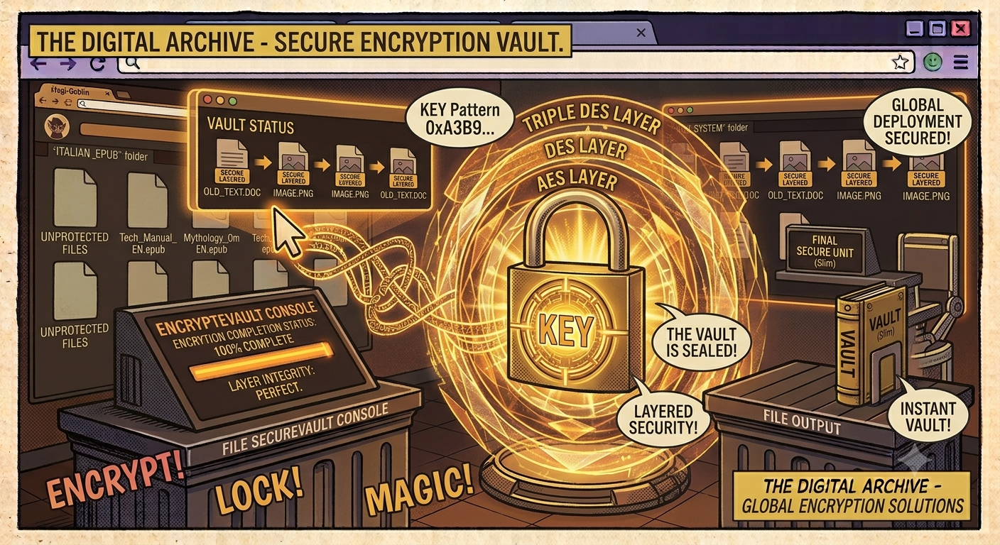

← Torna ai progettiCyfer
Cifratura e decifratura file con GUI moderna e intuitiva. Tre algoritmi standard (AES, DES, Triple DES), generazione chiavi tramite movimento casuale del mouse — tutto completamente offline.
📖 Cos'è
Cyferè un'applicazione desktop per la cifratura e decifratura sicura di file, costruita con Python e CustomTkinter per offrire un'interfaccia moderna e intuitiva. Supporta tre algoritmi di cifratura standard tramite la libreria PyCryptodome: AES (Advanced Encryption Standard — il più sicuro e veloce, consigliato per la maggior parte dei casi), DES (Data Encryption Standard — storico, sicurezza base) e Triple DES (applica DES tre volte, sicurezza elevata ma più lento). La generazione delle chiavi sfrutta l'entropia del movimento del mouse: muovendo il cursore per 5 secondi si produce una chiave crittografica realmente casuale.
👤 A chi serve
Cyfer è pensato per chiunque abbia bisogno di proteggere file sensibili con cifratura forte, senza complicazioni tecniche. Professionisti che gestiscono documenti riservati (contratti, dati finanziari, cartelle cliniche) e vogliono un metodo semplice per cifrarli prima di archiviarli o inviarli. Privati che proteggono foto, video e documenti personali su chiavette USB o cloud storage. Studenti e ricercatori che cifrano dati di ricerca sensibili.
⚙️ Come funziona
L'operazione è guidata passo-passo dall'interfaccia. Cifratura: l'utente seleziona il file tramite Browse, sceglie l'algoritmo (AES consigliato), genera una chiave muovendo il mouse per 5 secondi (o la inserisce manualmente) e avvia la cifratura. PyCryptodome cifra il file con la chiave e l'algoritmo scelti, il risultato viene salvato come nomefile.enc e la chiave come nomefile.key. Decifratura: l'utente seleziona il file .enc; se il corrispondente file .key esiste nella stessa directory, viene rilevato automaticamente. Altrimenti può essere selezionato manualmente. Il file decifrato viene salvato con estensione .dec.
🔑 Gestione delle Chiavi
- Generazione mouse-based — Muovi il mouse per 5 secondi per generare una chiave crittografica basata sull'entropia del movimento
- Inserimento manuale — Inserisci una chiave personalizzata per casi d'uso specifici
- File chiave automatici — Le chiavi vengono salvate in file
.keyper un facile riutilizzo - Rilevamento automatico — In decifratura, il programma riconosce automaticamente il file
.keycorrispondente
🎛️ Algoritmi Supportati
| Algoritmo | Tipo | Sicurezza | Velocità |
|---|---|---|---|
| AES | Simmetrico a blocchi | ⭐⭐⭐ Elevata | ⭐⭐⭐ Veloce |
| DES | Simmetrico a blocchi | ⭐ Base | ⭐⭐ Media |
| Triple DES | Simmetrico a blocchi | ⭐⭐ Alta | ⭐ Più lenta |
📋 Flusso di Lavoro
- Seleziona il file da cifrare tramite il pulsante "Browse"
- Scegli l'algoritmo desiderato (AES consigliato per la maggior parte dei casi)
- Genera una chiave sicura muovendo il mouse, oppure inseriscila manualmente
- Avvia la cifratura — il file viene processato e salvato con estensione
.enc - Per decifrare: seleziona il file
.enc, la chiave viene rilevata automaticamente se presente nella stessa directory
✨ Interfaccia Utente
- GUI moderna — Design pulito e reattivo con CustomTkinter, ispirato al Material Design
- Barra di progresso — Indicatore visivo durante le operazioni di cifratura/decifratura
- Icone di stato — Feedback immediato sul successo o fallimento delle operazioni
- Log in tempo reale — Registro operazioni con timestamp nel pannello principale
- Estensioni automatiche — I file cifrati ricevono estensione
.enc, quelli decifrati.dec
🔒 Privacy e Sicurezza
100% offline. Cyfer non richiede connessione a internet — la cifratura avviene interamente sul tuo computer. I file non vengono mai caricati su server esterni. La generazione della chiave tramite movimento del mouse sfrutta l'entropia fisica per creare chiavi realmente casuali.
📦 Installazione
# Clona il repository git clone https://github.com/vigliafg/cyfer.git cd cyfer # Installa le dipendenze pip install -r requirements.txt # Avvia l'applicazione python file_encryptor.py